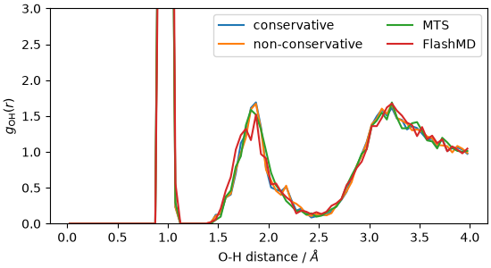

Note
Go to the end to download the full example code.
Using non-conservative forces and FlashMD in LAMMPS¶
- Authors:
Filippo Bigi @frostedoyster, Michele Ceriotti @ceriottm
This recipe compares four ways of running dynamics from the same liquid-water configuration using the metatomic LAMMPS interface with PET-MAD: conservative forces, direct non-conservative forces, and a multiple time stepping (MTS) correction that combines both. We also run FlashMD, a long-stride trajectory model, through the same LAMMPS executable and from the same initial structure.
For each method we print an indicative throughput in ns/day. We also compute the O-H radial distribution function from each trajectory.
For a more pedagogic discussion, you can see the non-conservative MD and FlashMD recipes, that use i-PI as engine.
The examples below use the CPU by default so that they can run on a standard
laptop. For production calculations, set the device argument in the
LAMMPS inputs and the FlashMD driver to cuda on GPU machines.
import linecache
import os
import time
import ase.io
import matplotlib.pyplot as plt
import numpy as np
import upet
from atomistic_cookbook_utils import run_command
from flashmd import get_pretrained
SECONDS_PER_DAY = 24 * 60 * 60
ELEMENTS = ["O", "H"]
MODEL_PATH = "pet-mad-s-v1.5.0.pt"
NORMAL_STEPS = 128
TIMESTEP_FS = 0.5
MTS_STEPS = 16
MTS_TIMESTEP_FS = 4.0
FLASHMD_TIMESTEP_FS = 16
FLASHMD_STEPS = 8
Preparing the water box and models¶
We use a liquid-water box containing 64 molecules. The coordinates are wrapped
before writing the LAMMPS data file so all atoms start inside the periodic cell.
specorder fixes LAMMPS type 1 to O and type 2 to H, matching the
pair_coeff and fix metatomic lines below.
water = ase.io.read("data/water.xyz")
water.wrap()
os.makedirs("tmp", exist_ok=True)
ase.io.write(
"tmp/water.data",
water,
format="lammps-data",
atom_style="atomic",
units="metal",
specorder=ELEMENTS,
masses=True,
)
upet.save_upet(model="pet-mad", size="s", version="1.5.0", output=MODEL_PATH)
_, flashmd_model = get_pretrained("pet-omatpes-v2", FLASHMD_TIMESTEP_FS)
flashmd_model.save(f"flashmd-{FLASHMD_TIMESTEP_FS}.pt")
Warning: You are sending unauthenticated requests to the HF Hub. Please set a HF_TOKEN to enable higher rate limits and faster downloads.
WARNING:huggingface_hub.utils._http:Warning: You are sending unauthenticated requests to the HF Hub. Please set a HF_TOKEN to enable higher rate limits and faster downloads.
/home/runner/work/atomistic-cookbook/atomistic-cookbook/.nox/lammps-flashmd/lib/python3.12/site-packages/metatrain/pet/model.py:1428: UserWarning: the 'non_conservative_forces' output name is deprecated, please update the model to use 'non_conservative_force' instead
return AtomisticModel(self.eval(), metadata, capabilities)
/home/runner/work/atomistic-cookbook/atomistic-cookbook/.nox/lammps-flashmd/lib/python3.12/site-packages/metatrain/pet/model.py:1428: UserWarning: the 'non_conservative_forces' output name is deprecated, please update the model to use 'non_conservative_force' instead
return AtomisticModel(self.eval(), metadata, capabilities)
/home/runner/work/atomistic-cookbook/atomistic-cookbook/.nox/lammps-flashmd/lib/python3.12/site-packages/metatrain/llpr/model.py:999: UserWarning: the 'non_conservative_forces' output name is deprecated, please update the model to use 'non_conservative_force' instead
return AtomisticModel(self.eval(), metadata, self.capabilities)
/home/runner/work/atomistic-cookbook/atomistic-cookbook/.nox/lammps-flashmd/lib/python3.12/site-packages/metatomic/torch/model.py:75: UserWarning: the 'non_conservative_forces' output name is deprecated, please update the model to use 'non_conservative_force' instead
return AtomisticModel(model, model.metadata(), model.capabilities())
LAMMPS input files¶
The conservative and non-conservative inputs differ only by the
non_conservative on keyword in the pair_style metatomic command. The
MTS input uses a hybrid/overlay pair style: the inner force is the direct
non-conservative force, and the outer correction is conservative minus direct.
The FlashMD input uses fix metatomic as a learned time propagator.
temperature = 300.0
print("\nConservative forces MLIP input file:")
print(linecache.getline("data/lammps-c.in", 6), end="")
print("\nNon-conservative forces MLIP input file:")
print(linecache.getline("data/lammps-nc.in", 6), end="")
print("\nMTS combining both input file:")
for lineno in [5, 6, 7, 8, 10, 11, 12, 19]:
print(linecache.getline("data/lammps-mts.in", lineno), end="")
print("\nDirect propagation input file:")
print(linecache.getline("data/lammps-flashmd.in", 15), end="")
Conservative forces MLIP input file:
pair_style metatomic pet-mad-s-v1.5.0.pt device cpu
Non-conservative forces MLIP input file:
pair_style metatomic pet-mad-s-v1.5.0.pt device cpu non_conservative on
MTS combining both input file:
pair_style hybrid/overlay &
metatomic_1 pet-mad-s-v1.5.0.pt device cpu non_conservative on scale 1.0 &
metatomic_2 pet-mad-s-v1.5.0.pt device cpu non_conservative on scale -1.0 &
pair_coeff * * metatomic_1 8 1
pair_coeff * * metatomic_2 8 1
# components are assigned to levels 1 (inner), 2, and 2 respectively.
Direct propagation input file:
fix flashmd all metatomic flashmd-16.pt types 8 1 device cpu
Running and timing the LAMMPS trajectories¶
The runs are relatively short for the purposes of this recipe: longer runs would be needed to obtain converged statistics. However, the relative speeds of the different simulations are (almost) representative of their cost ratios.
def ns_per_day(simulated_time_fs: float, elapsed_seconds: float) -> float:
return simulated_time_fs * 1e-6 * SECONDS_PER_DAY / elapsed_seconds
def run_lammps(label: str, input_file: str, simulated_time_fs: float) -> float:
start = time.perf_counter()
run_command(f"lmp -in {input_file}")
elapsed = time.perf_counter() - start
throughput = ns_per_day(simulated_time_fs, elapsed)
print(f"{label:24s}: {throughput:8.3f} ns/day")
return throughput
simulated_time_fs = NORMAL_STEPS * TIMESTEP_FS
throughputs = {
"conservative": run_lammps(
"Conservative LAMMPS",
"data/lammps-c.in",
simulated_time_fs,
),
"non-conservative": run_lammps(
"Non-conservative LAMMPS",
"data/lammps-nc.in",
simulated_time_fs,
),
"MTS": run_lammps(
"MTS LAMMPS",
"data/lammps-mts.in",
MTS_STEPS * MTS_TIMESTEP_FS,
),
"FlashMD": run_lammps(
"FlashMD LAMMPS",
"data/lammps-flashmd.in",
FLASHMD_STEPS * FLASHMD_TIMESTEP_FS,
),
}
Conservative LAMMPS : 0.049 ns/day
Non-conservative LAMMPS : 0.101 ns/day
MTS LAMMPS : 0.072 ns/day
FlashMD LAMMPS : 0.832 ns/day
O-H radial distribution functions¶
We compute O-H radial distribution functions for all four trajectories. The FlashMD curve should be interpreted separately from the three PET-MAD curves, because FlashMD uses a different model and a much longer learned propagation step.
def read_lammps_trajectory(filename: str) -> list:
frames = ase.io.read(filename, ":")
symbols = water.get_chemical_symbols()
for atoms in frames:
atoms.set_chemical_symbols(symbols)
atoms.pbc = True
return frames
def oh_rdf(frames: list, r_max: float = 4.0, bins: int = 80):
edges = np.linspace(0.0, r_max, bins + 1)
centers = 0.5 * (edges[:-1] + edges[1:])
shell_volumes = 4.0 * np.pi / 3.0 * (edges[1:] ** 3 - edges[:-1] ** 3)
histogram = np.zeros(bins)
for atoms in frames:
oxygen = [i for i, atom in enumerate(atoms) if atom.symbol == "O"]
hydrogen = [i for i, atom in enumerate(atoms) if atom.symbol == "H"]
distances = atoms.get_all_distances(mic=True)
oh_distances = distances[np.ix_(oxygen, hydrogen)].reshape(-1)
histogram += np.histogram(oh_distances, bins=edges)[0]
hydrogen_density = len(hydrogen) / frames[0].get_volume()
rdf = histogram / (len(frames) * len(oxygen) * hydrogen_density * shell_volumes)
return centers, rdf
trajectory_files = {
"conservative": "conservative.lammpstrj",
"non-conservative": "non-conservative.lammpstrj",
"MTS": "mts.lammpstrj",
"FlashMD": "flashmd.lammpstrj",
}
fig, ax = plt.subplots(1, 1, figsize=(5.5, 3), constrained_layout=True)
for label, filename in trajectory_files.items():
frames = read_lammps_trajectory(filename)
radii, rdf = oh_rdf(frames)
ax.plot(radii, rdf, label=label)
ax.set_xlabel(r"O-H distance / $\AA$")
ax.set_ylabel(r"$g_{\mathrm{OH}}(r)$")
ax.set_ylim(0, 3)
ax.legend(ncols=2)
plt.show()

Total running time of the script: (4 minutes 40.737 seconds)